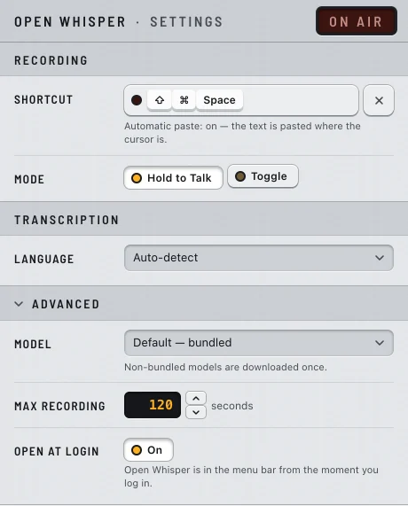
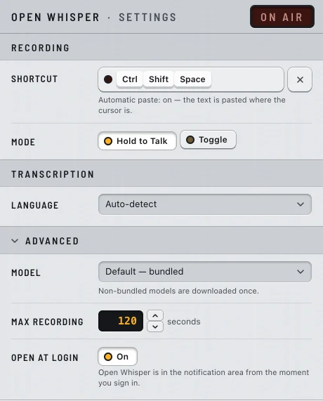
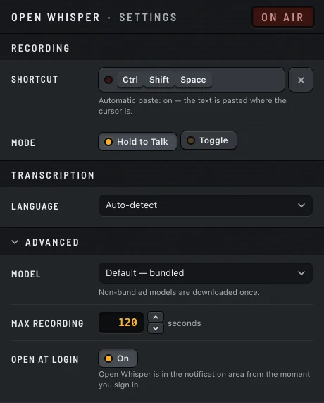

The model is the part of Open Whisper that turns speech into text. One comes with the app, and three more can be downloaded. This page says what each one is for, how to get it and what you cannot do with models.
What a model is
A speech model is a large file that has learned to recognise speech. Open Whisper runs it on your computer: the audio goes into the model, the text comes out, and nothing is sent anywhere. The models are versions of Whisper, prepared to run on a normal computer.
- A bigger model usually makes fewer mistakes, and takes more disk space and more time.
- All four models are multilingual: each one understands every language in Language, and auto-detect.
- Dictation and video each have their own model choice, so you can keep a fast one for dictation and a careful one for video.
- Next to the model, the app ships a small voice detector that tells speech from noise. It is not something you choose.
The four models
| Name in the app | Id | Size | Where it comes from |
|---|---|---|---|
| Default | small-q5_1 | about 181 MB | bundled with the app |
| Light | base | 141 MB | download |
| Large | medium-q5_0 | 514 MB | download |
| Most accurate | large-v3-turbo-q5_0 | 547 MB | download |
- Default is the model the app starts with, for dictation and for video. It is already on the computer and always available.
- Light is smaller and faster than Default, and makes more mistakes.
- Large and Most accurate make fewer mistakes, and are slower. They are meant for video, where you are not waiting at the cursor.
The ids are the names the command line uses in --model.
Choosing a model
For dictation
- Open Settings… from the Open Whisper menu.
- Click Advanced.
- In Model, choose one. If it is not on the computer yet, the download starts.
The next dictation uses the new model, without a restart. If a model fails to load, the app keeps using the one it had.
Keep Default unless you have a reason to change. A dictation should be pasted within a few seconds, and the two bigger models can make you wait. Try Light if your dictations feel slow.
Windows
On Windows the transcription runs on the processor, with no graphics card acceleration. The size of the model weighs on the waiting time.
For video
In the video window, open Quality and choose a Model there. This choice is separate from the dictation one. Next to each model the window says whether it is already bundled, a one-time … download or …, already downloaded, and, for the two smaller ones, the error rate measured in Portuguese. The window puts it this way: Bigger models get less wrong — especially English words spoken inside Portuguese. In exchange they take disk space and time. See Video and files.




Downloading a model
Choosing a model that is not on the computer, in Settings or in the video window, downloads it. A model is downloaded once; after that it stays on the computer, for dictation, video and the command line alike.
- The file comes from Hugging Face, from
https://huggingface.co/ggerganov/whisper.cpp. This is one of the few times Open Whisper uses the network, and it only happens when you choose a model. Never during a dictation. Privacy has the full list. - When the download ends, the app checks the file against its known SHA-256 fingerprint. A damaged or incomplete file is not used.
- A download cannot start while a dictation is in progress. Wait for it to end.
Where the models are
Mac
- Downloaded models:
~/Library/Application Support/open-whisper/models/(base.bin,medium-q5_0.bin,large-v3-turbo-q5_0.bin). - The bundled model is inside the app:
Open Whisper.app/Contents/Resources/models/.
Windows
- Downloaded models:
%LOCALAPPDATA%\open-whisper\models\(base.bin,medium-q5_0.bin,large-v3-turbo-q5_0.bin). This folder is kept out of a roaming profile. - The bundled model is in the
modelsfolder where Open Whisper was installed.
What is not possible
- There is no button to remove a downloaded model. To free the space, first choose another model in Settings and in the video window, then delete the file from the folder above.
- Only these four models. You cannot add another model file, or use an online engine.
- The command line never downloads a model. It uses only the ones already on the computer, and stops with exit status 4 when the model is missing.